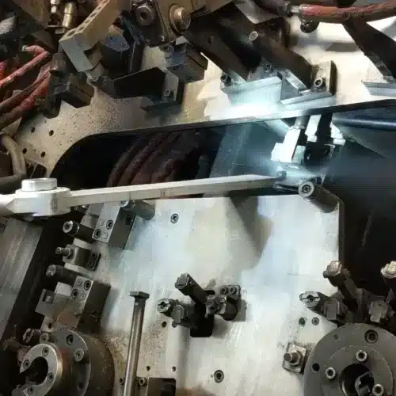

같은 드라이아이스 세척이라도 무엇을 제거하고, 무엇을 보호해야 하는지에 따라
필요한 세척 조건과 적용 방법은 달라집니다.
금형 세척부터 생산설비 유지보수, 접착제·코팅 제거, 표면 전처리와 부품 마무리까지
작업 목적에 맞는 솔루션을 확인해보세요.
자동차, 반도체, 플라스틱, 식품, 발전과 같은 산업은 서로 다르지만 생산현장에서 발생하는 세척 과제에는 공통점이 있습니다.
금형에는 이형제와 수지가 쌓이고, 생산설비에는 오일과 공정 잔류물이 축적되며, 용접라인에는 스패터가, 도장라인에는 오버스프레이가 남습니다. 또한 접착제 제거, 표면 전처리, 디버링·디플래싱처럼 세척을 넘어 생산공정 자체를 지원하는 작업도 있습니다.
작업별 솔루션에서는 "어느 산업인가"보다 무엇을 제거해야 하는지, 어떤 표면을 보호해야 하는지, 어떤 결과가 필요한지를 기준으로 적합한 적용 방법을 살펴봅니다.
생산설비와 금형, 치공구의 본래 표면과 기능을 유지하면서 생산 과정에서 축적된 오염물을 제거합니다.
 01
01
복잡한 형상과 정밀한 표면을 유지하면서 금형과 툴링에 축적된 공정 잔류물을 제거합니다. 플라스틱·고무 금형 세척과 복합재 툴 세척을 하나의 솔루션으로 다룹니다.
 02
02
설비를 가능한 한 현장에서 유지한 상태로 축적된 오염물을 제거하여 정비시간과 생산 중단 부담을 줄이는 데 활용합니다.
자세히 보기 →
03용접라인과 자동화 설비에 축적되는 스패터와 공정 오염물을 제거해 지그와 센서, 로봇의 정상적인 작동을 유지합니다.
 04
04
도장공정 주변에 반복적으로 축적되는 오버스프레이와 코팅 잔류물을 제거하여 설비와 생산라인을 관리합니다.
자세히 보기 → 05
05
수분 사용을 피해야 하는 전기·전자 설비와 정밀 부품의 오염 제거에 건식 세척의 특성을 활용합니다.
자세히 보기 →오염물의 종류와 부착 특성에 따라 필요한 세척 강도와 입자 조건은 달라집니다.
 06
06
접착제와 수지가 축적되는 생산설비와 부품을 화학용제나 과도한 기계적 제거 없이 세척합니다.
 07
07
인쇄와 도장, 코팅공정에서 발생하는 잉크와 도료 잔류물을 설비와 표면 상태를 고려해 제거합니다.
자세히 보기 → 08
08
설비에 축적된 유분과 고착된 생산 잔류물을 제거하여 유지보수와 점검을 용이하게 합니다.
자세히 보기 → 09
09
표면 녹과 느슨하게 부착된 산화물 등을 제거하여 검사 및 유지보수를 돕습니다.
자세히 보기 →드라이아이스 기술은 단순한 설비 세척을 넘어 다음 생산공정을 준비하거나 부품을 마무리하는 공정에도 활용됩니다.
 10
10
후속 공정에 영향을 줄 수 있는 오일, 이형제, 먼지와 생산 잔류물을 제거해 표면을 다음 공정에 적합한 상태로 준비합니다.
 11
11
성형 또는 가공 후 발생한 Burr와 Flash를 제거하면서 제품의 치수와 주요 형상을 유지하는 부품 마무리 공정에 활용합니다.
자세히 보기 →생산공정 외에도 화재, 수해, 곰팡이 및 각종 복원 작업에서 드라이아이스 세척의 건식·비마모 특성을 활용할 수 있습니다.
같은 접착제나 수지라도 부착된 표면의 재질, 오염물의 두께와 경화 상태, 작업 온도와 접근성에 따라 필요한 세척 조건은 달라집니다.
바테크는 실제 부품이나 시편을 이용해 적용 가능성을 확인하고, 드라이아이스 입자 크기, 분사 압력, 공급량, 노즐, 분사 거리와 각도 등을 조정해 적합한 세척 조건을 검토합니다.
결과는 장비가 아니라,
적절한 적용 조건에서 시작됩니다.

드라이아이스의 물리적 특성부터 세척 원리와 장점, 세척 장비의 기본 개념까지 살펴봅니다.
자세히 보기 →
연마재·화학용제·고압세척 등 기존 방식과 드라이아이스 세척의 차이를 비교합니다.
자세히 보기 →
자동차·반도체·식품·발전 등 산업별 주요 세척 대상과 적용 방법을 안내합니다.
자세히 보기 →
도입 전 검토사항부터 설치 준비, 운영 체크리스트까지 순서대로 안내합니다.
자세히 보기 →제거할 오염물과 보호할 표면을 알려주시면 적용 가능성과 적정 조건을 안내합니다.